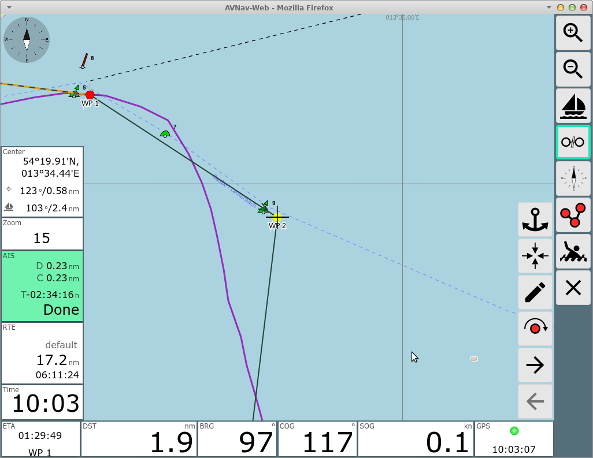

This page is the one normally used for navigation. In the picture there is an active waypoint and the chart is locked to the boat position (i.e. will move with the boat).
| Icon | Name | Funktion |
| ZoomIn | Zoom in | |
| ZoomOut |
Zoom out |
|
| LockPos |
lock the chart center to the boat position can only be activated if there is a valid position |
|
| StopNav |
stop the navigation only visible if there is currently an active waypoint or route |
|
| LockMarker |
start waypoint navigation. the center of the chart (cross) will become the target waypoint. only visible if there is currently no active route or waypoint |
|
| CourseUp |
rotate chart - course forward will be at top |
|
| ShowRoutePanel |
change to route editor (also by
clicking on the route display if there is any) |
|
| MOB |
man over board (see main page) |
|
| FullScreen | Fullscreen on/off (supported browsers only) | |
| Overflow |
Show a second button list if the screen is too small for all
buttons. Only visible if you did not select "2 button columns" at
Settings/Layout. |
|
| Dim |
Dim Mode. The screen will be dimmed and all buttons become
inactive. Leave this state by clicking anywhere on the screen. This button is only visible in the Android app or when using the BonjourBrowser (version 1.5 and above). This button really dims the complete screen. This way you can limit the power consumption of your device if you do not need an instant display. It can also prevent overheating when running on high brightness and on high temperatures. |
|
| Cancel | back to main page |
This is the navigation view. In the middle there is the chart display with the boat position (red arrow). The yellow and green symbols are the AIS targets in vicinity (10nm, can be changed in settings) together with their current curse and name or MMSI. The orange line is the course towards the current target waypoint. The dotted line show the original course from the start of navigation to the target waypoint. You can move and zoom the chart with the normal gestures. For zooming you can also use the buttons +/- on the right side. If the chart is locked to the boat position (like in the picture) it will always jump back there.
You can have up to 3 circles being drawn around the boat to be able to estimate distances. You can change them via settings->navigation display. Standard values are 300m and 1000m.
(since 202011xx) The length of the line showing your current course ("Course Vector") can be adapted in the settings(Navigation/Boat Course Vector Length). You will set the seconds and the length will be computed using your current boat speed (default: 10 minutes). The width of this line is controlled by the width for the Navigation Circles.
The same settings are also valid for the course vectors of the AIS targets.
At the left side you have (top down):
The display of the next AIS target will turn red if the expected CPA will be less then 500m (can be changed in settings). If the display is yellow it does not show the nearest target but another one you have selected on the ais info page. If you click on this display you move to the ais info page.
(since 202011xx)The icons used for your boat and the AIS targets can be changed using a file images.json. Additionally you can scale the AIS symbols(AIS/Icon Scale) and you can give them a border(AIS/Border Width). If your browser is slowed down by the computation and drawing of the AIS course vectors you can switch them off (AIS/AIS Use Course Vector).
At the bottom of the navigation page you have the most important instrument data. At the left the data for the current active waypoint (if any):
On the right the boat data:
Depending on the display width and the settings for the font size (widget font size) you will have 2 rows of data (you can change this in settings at "2 widget rows"). Items that do not fit any more will be hidden completely.
For the boat data (position, course, speed) you can set up an averaging (settings->navigation). If turned on the captions at the displays will turn red.
All display can be adapted with the layout editor.
If you click on the lower right displays you will be moved to the dashboard.
Clicking on the lower left displays will bring up a couple of additional waypoint buttons.

| Icon | Name | Function |
| AnchorWatch | switch on anchor watch (see dashboard) | |
| WpLocate | move chart center to waypoint | |
| WpEdit | edit waypoint you can change the name and position of the waypoint in the dialog |
|
| WpGoto | start navigation to this waypoint will only be visible if there is no current navigation |
If currently a route is active, the waypoint buttons will change slightly.

The additional buttons
| Icon | Name | Function |
| NavNext | start navigation to the next waypoint of the current route | |
| WpNext | center chart to next waypoint | |
| WpPrevious | center chart to previous waypoint |
If a route is currently active there will be a display for the route data on the left side (name, remaining distance, eta).
In routing mode there will be a change of the target waypoint to the next one if the following conditions are met:
In approach the display of the route parameters will turn red and the course to the next waypoint will be shown additionally. Additionally a waypoint alarm is triggered.
If the is no automatic movement to the next waypoint, you can click on
the waypoint data and use the  button to set the next waypoint as target.
button to set the next waypoint as target.
Steps:
If a waypoint is active and the chart is not locked to the boat position you have a "Center" display at the left side. This shows the center position, the course and distance from the boat to the center and from the waypoint to the center. For a simple bearing just move the chart center (cross) to the bearing target and read the bearing from the "Center" display.
To start a route - change with  to the route
editor.
to the route
editor.